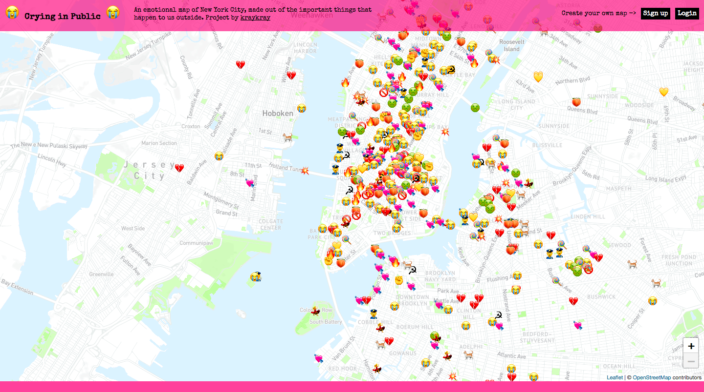

Affective ğŸ Mapping 🗺ï¸
Designing for Social Change
@brandynfriedly
NACIS 2018
Norfolk, Virgina
Why Affective Mapping?

The 🌠is on 🔥
What can maps do?
"Cartography as a tool... 'to make maps for a future to be possible.'"
Communication Case Study
Facebook's "Here Together" Ad Campaign
- April '18: Mark Zuckerberg tesifies before U.S. Congress about misuse of user data
- Company stock value drops ~$120 Billion
- Summer '18: Launches PR campaign to sway public perception

“This is how reason really works: through framing, metaphors, emotion, narratives, and imagery. ”
3 Layers of User Experience (Don Norman)
- ❤️ Visceral
- Stirs immediate reaction to form, color, texture, texture, materiality
- 🕺 Behaviorial
- Prompts physical action or response
- 🧠Reflective
- Engages memories and associations
How to communicate emotion and experience?
- ==> Art 🨠📖 🶠ğŸ ğŸ¬
- Cartography: The 🨠+ 🔬 of 🗺ï¸
Color
Virginia Museum of Fine Arts
❤️
☀️


🔮 Into the Mystic

Story
We organize information on maps in order to see our knowledge in a new way. As a result, maps suggest explanations; and while explanations reassure us, they also inspire us to ask more questions, consider other possibilities. To ask for a map is to say, “Tell me a story.”
Maps: A Way of Seeing 👁️
“Every image embodies a way of seeing. Even a photograph. For photographs are not, as is often assumed, a mechanical record. Every time we look at a photograph, we are aware, however slightly, of the photographer selecting that sight from an infinity of other possible sights .†(Berger, Page 10).
"An object or place achieves concrete reality when our experience of it is total, that is, through all the senses as well as with the active and reflective mind." (Tuan, 18).
Crying in Public, by Kate Ray
Crying in Public, by Kate Ray
Crying in Public, by Kate Ray
Crying in Public, by Kate Ray
The 🌠is on 🔥

Nicolette Hayes' map

- Why map?
- How do maps represent our current reality?
- What (and whose) stories are being told?
- What is the mapmakers role in facing this crisis?
Thank you, NACIS!
Twitter:
@brandynfriedly
Email:
bfriedly@bemappy.xyz